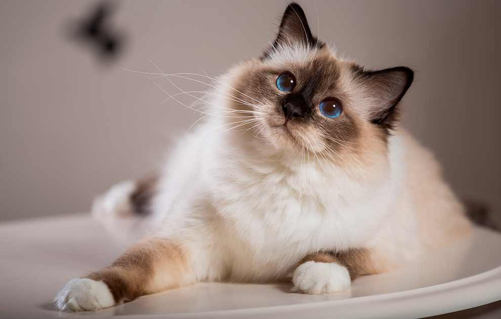

Hellig Birma

Kendetegn:
Blå øjne, hvide poter og ansigtsmaske
Størrelse:
Medium
Pelspleje:
Moderat. Skal reddes i fældeperioder

Temperament:
Meget social, legesyg, familiekat
Gennemsnitlig levealder:
12-16 år
Personlighed
Birmaen er smuk i både sind og skind. Den er normalt både kælen og tillidsfuld, og den er meget nysgerrig. Den er ofte meget legesyg, selv som voksen.
Den er meget glad for sin familie, og den assisterer ofte gerne sit menneske med dagens gøremål. En birma, som går helt alene dagen lang uden selskab, er ofte en ulykkelig birma.
Har man lange arbejdstider, er det en god idé med en legekammerat. Det behøver ikke nødvendigvis at være en anden birma. Dens venlige sind gør, at den let slutter venskab med andre katteracer eller f.eks. hunde.
Selv om dens udseende er meget eksotisk, er der skam en "rigtig kat" indeni. Hvis man lader sin birma få adgang til haven, kan den sagtens fange mus og klatre i høje træer lige som andre katte. Den har dog ikke noget stort ude-behov, og mange birmaer lever glade og tilfredse som lejlighedskatte hele livet.
Maine Coon
Kendetegn:
Stor, kraftig, tufser på ørerne
Størrelse:
Stor
Pelspleje:
Moderat. Børstes én gang ugentligt
Temperament:
Nysgerrig, vandglad, social
Gennemsnitlig levealder:
Op til 13 år
Personlighed
Af temperament får Maine Coon katten selvfølgelig, på en skala fra 1-10 point, 10 point. Den er helt speciel i sin adfærd. Den er fræk og kan til tider være direkte uartig, og som killing og ungdyr foregår al gang i løb. Den er hurtig, smidig og bevæger sig som en gazelle, også selv om den bliver stor og tung.
Vil man have Maine Coon, må man også være klar over, at de er med i ALT. Faktisk ligner de meget hunde i deres adfærd, og de elsker menneskekontakt. De trives fint indendørs, men lukkede døre tolereres ikke.
De kommer fint ud af det andre katteracer, hunde og sandelig også med kaniner og andre slags kæledyr.
Et andet særpræg for Maine Coon kattene er, at de sidder og skraber på gulvet eller slår med poten i deres vandskål, før de drikker. Denne adfærd menes at være et levn fra deres oprindelse som naturkat i de kolde egne af Nordamerika, da de i naturen måtte slå hul på isen i søerne for at kunne drikke eller fange fisk. Mange ejere oplever, at deres Maine Coon tager sin mad med poterne og spiser.
Maine Coon katten er også nem at lære at gå i sele. Da den er nysgerrig af sind, vil de fleste nyde at komme på tur og få nye oplevelser.